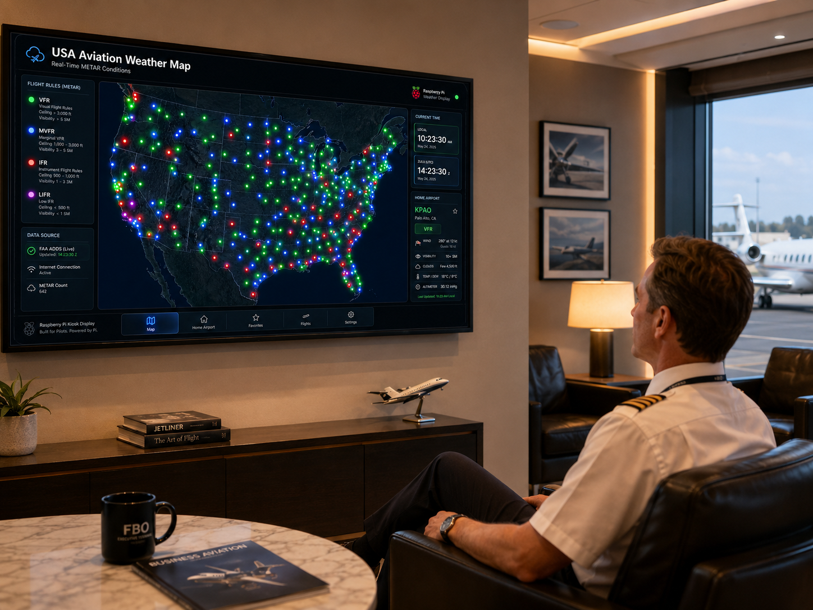

USA Aviation Weather Map
Add the generated screenshot as assets/real_time_usa_aviation_weather_dashboard.png to show the finished Raspberry Pi display.
Most complex build
Raspberry Pi Aviation Weather Map
A full-screen aviation weather display built for a Raspberry Pi kiosk setup, designed to boot directly into a polished wall-display interface for hangars, offices, and pilot spaces.
- USA map with LED-style airport weather indicators for VFR, MVFR, IFR, and LIFR conditions.
- Real-world kiosk thinking: fullscreen display, refresh status, local/Zulu time, home-airport wind, and aviation-first layout.
- Blends front-end UI design, live aviation data handling, hardware deployment, and product packaging.
Live demo intentionally not linked. This project is best shown as a hardware/software walkthrough because the Raspberry Pi kiosk behavior is part of the accomplishment.